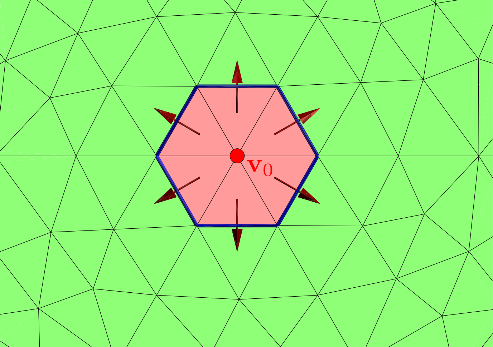
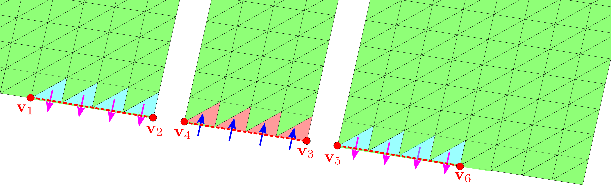
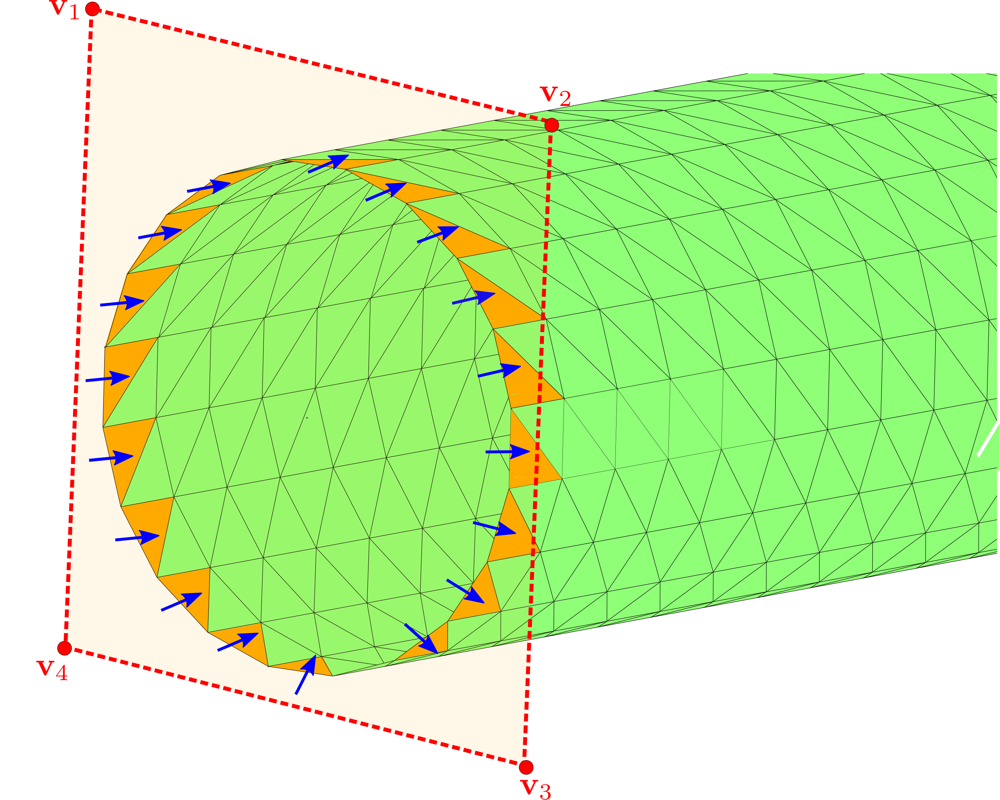

The scuff-em RF module
The scuff-em RF module is an extension of the scuff-em core library to enable RF device modeling within the framework of the surface-integral-equation (SIE) approach to electromagnetic scattering implemented by scuff-em. More specifically, the RF module extends scuff-em's core SIE solver in two key ways:
As a new type of incident-field source, scuff-rf introduces the notion of RF port. An RF port is simply a localized region of a material body into which an RF current may be injected. The fields radiated by currents forced into RF ports are taken to be the incident fields in an SIE scattering problem, which scuff-em then solves like any other scattering problem to determine the induced currents everywhere else (outside the ports) on the surfaces in a geometry.
Having computed the induced currents in response to an RF port excitation, we can now make use of the full panoply of existing post-processing options (calculation of scattered and total field components, induced moments, absorbed and scattered power, visualization of fields and currents, etc) provided by the scuff-em core library. However,
As a specific new type of post-processing calculation, scuff-rf implements an algorithm for computing the matrix of impedance parameters for a multiport RF structure.
This page documents how to use the scuff-em RF module for practical RF device modeling; technical details regarding the implementation of the module are discussed in the scuff-rf technical memo.
- Multiple interfaces to the scuff-em RF module: C++, python, command-line
- Describing microstrip geometries in scuff-em
Multiple interfaces to the scuff-em RF module: C++, python, command-line
There are multiple ways to access the functionality offered by the scuff-em RF module:
-
You can write C++ or python codes that make calls to API routines to describe geometries, solve RF modeling problems, and do various post-processing calculations. This is ideal for interactive calculations and for harnessing existing C++ or python codes for post-processing.
-
You can use the
scuff-rfcommand-line module (built and installed by the standard scuff-em installation process), passing command-line options to describe the geometry and the calculations to perform. Among other things, this is useful for large-scale batch-processed jobs on HPC clusters.
In general, the full functionality of the module is available via either interface, and anything you might want to do will be doable in multiple ways. In this documentation and the closely related illustrative tutorial on microstrip-device modeling with the scuff-em RF module we will generally provide both python codes and command-line scripts for running all calculations.
Describing microstrip geometries in scuff-em
The description of microstrip geometries in scuff-em consists of three ingredients:
-
one or more meshed polygons defining metal traces (red regions in the pictures above)
-
a description of the substrate (its relative permittivity and thickness ).
-
a definition of where the ports are located on the traces (indicated schematically by white lines and arrows in the pictures above.)
We'll consider each of these items in turn.
1. Specifying meshed metal traces
1A. Write a .scuffgeo file
One way to define metal traces is simply to write a standard scuff-em geometry file
specifying one or more mesh files (such as gmsh .msh files or comsol .mphtxt files),
optionally subjected to rigid geometrical transformations (translations and rotations). For example, scuff-em
geometry files for the coupled-antenna geometry shown above describe the geometry as containing two copies
of a mesh file for the single antenna, the second of which is displaced relative to the first.
PFAntennas_Coarse.scuffgeo:
OBJECT Antenna1 MESHFILE PointFedAntenna_Coarse.msh ENDOBJECT OBJECT Antenna2 MESHFILE PointFedAntenna_Coarse.msh DISPLACED 105.7 -65.5 0.0 ENDOBJECT
Geometry files may be specified to scuff-em by saying
SetGeometryFile("MyGeometry.scuffgeo") in C++ or python, or by saying
--geometry MyPorts.port on the scuff-rf command line.
1B. Use API routines to add polygon meshes
Alternatively, you can skip writing a .scuffgeo file altogether and instead build up your
geometry from a C++ or python code by making one or more calls to the AddMetalTraceMesh()
API routine. Each call to this routine adds one copy of the meshed polygon to your geometry,
optionally displaced or rotated. Thus, the following two lines in a python code
yield the same effect as the .scuffgeo file above:
Solver= scuff.RFSolver(); Solver.AddMetalTraceMesh("PointFedAntenna_Coarse.msh", "Antenna1"); Solver.AddMetalTraceMesh("PointFedAntenna_Coarse.msh", "Antenna2", "DISPLACED 105.7 -65.5 0.0");
2. Define the substrate
2A. Write a .substrate file
One way to specify the substrate is to write a simple text file (conventionally
assigned file extension .substrate) describing the substrate in your geometry.
As discussed in more detail in the technical documentation for the
scuff-em full-wave substrate module,
each line of this file adds either (a) a single material layer to the substrate,
specified by the -coordinate of its upper surface and a
scuff-em material descriptor describing
its bulk permittivity and permeability, or (b) a perfectly conducting ground plane,
specified by its height (-coordinate) and the keyword GROUNDPLANE.
Here's a .substrate file defining a dielectric layer of relative
permittivity and thickness 0.794 mm terminated
below by a ground plane.
0.0 CONST_EPS_2.2 -0.794 GROUNDPLANE
Note that, if the GROUNDPLANE line were omitted, this file would
describe an infinitely thick substrate (half-space) filling the region .
2B. Include a SUBSTRATE....ENDSUBSTRATE section in your .scuffgeo file
If you chose to write a .scuffgeo file to define your metal traces, you can
include the substrate definition in this file by adding a SUBSTRATE...ENDSUBSTRATE
clause. The text between the opening and closing keywords is processed
as if it had been read in from the .substrate file; thus, to specify the
substrate described above we would say
SUBSTRATE 0.0 CONST_EPS_2.2 -0.794 GROUNDPLANE ENDSUBSTRATE
2C. Use API routines to define substrate properties
Finally, you can specify substrate properties directly from C++ or python codes by calling API routines. For example, to define
SetSubstratePermittivity(2.2); AddSubstrateLayer(0.0, 2.2); // equivalent to previous line SetSubstrateThickness(+0.794); AddGroundPlane(-0.794); // equivalent to previous line SetSubstrateFile("MyFile.substrate");
3. Specifying ports
Ports are regions of surfaces into which external RF currents are forced. (More specifically, a port will generally have a positive terminal, into which a current is forced, and a negative terminal, from which an identical current is extracted. Specifying no negative terminal for a port is equivalent to placing the negative terminal on the ground plane of the substrate or on a fictitious surface at spatial infinity.)
Each port terminal consists of one or more triangles in a meshed geometry, each with a distinguished choice of edge; the injected (or extracted) port current gives rise to a nonzero surface-current density that is only nonzero over these triangles, and which flows out over the designated edges to the rest of the structure. Some examples are (click for larger images):
|  | port terminals localized at a single point; the current is injected into (or extracted from) and yields nonzero surface-current density over all triangles with a vertex at |
|  | point terminals lying on the boundary of meshed surfaces; each terminal is defined by the vertices of the line segments that encompass it |
|  | point terminals lying on non-straight-line surface boundaries. In this case, we define the port by the planar polygon ; the port terminal will consist of all exterior mesh edges lying within this polygon. |
{kind=link}
{kind=link}
{kind=link}
Thus, each port terminal may be defined by specifying vertices: vertex for a point-defined port terminal, vertices for a line-segment-defined port terminal, and for a polygon-defined port terminal. Each vertex has three coordinates, so we have to communicate numbers to scuff-em.
Also note that a single port terminal may involve two or more polygon specifications; for example, in the second example above the negative port terminal is specified by the union of the line segments and
3A. Write a .ports file
Ports may be defined by writing a simple text file (conventionally given file extension .ports)
containing one or more PORT...ENDPORT clauses. Each clause
defines positive (and optionally negative) port terminals using the keyword POSITIVE|NEGATIVE
followed by a list of vertex coordinates x1 y1 z1 x2 y2 z2 ...
Examples may be found in the share/scuff-em/examples/MicrostripDevices/portFiles
subdirectory of your scuff-em installation:
PFAntennas.ports
# port specification for center-fed antenna PORT POSITIVE 0 0 0 ENDPORT
CPW.ports
# port specification for coplanar waveguide PORT POSITIVE -0.6 0 -0.1 0.60 0 -0.1 0.60 0 0.1 -0.60 0 0.1 NEGATIVE -3.0 0 -0.1 -0.61 0 -0.1 -0.61 0 0.1 -3.00 0 0.1 NEGATIVE 3.0 0 -0.1 0.61 0 -0.1 0.61 0 0.1 3.00 0 0.1 ENDPORT PORT POSITIVE -0.6 10 -0.1 0.60 10 -0.1 0.60 10 0.1 -0.60 10 0.1 NEGATIVE -3.0 10 -0.1 -0.61 10 -0.1 -0.61 10 0.1 -3.00 10 0.1 NEGATIVE 3.0 10 -0.1 0.61 10 -0.1 0.61 10 0.1 3.00 10 0.1 ENDPORT
Port files may be specified to scuff-em by saying
SetPortFile("MyPorts.port") in C++ or python, or by saying
--PortFile MyPorts.port on the scuff-rf command line.
3B. Make API calls
If you are building up your geometry from a python script, you can define ports
via the AddPort routine, whose inputs are lists of vertices defining
the positive and (optional) negative port terminals.
# center-fed antenna fed at the origin AddPort([0, 0, 0]) # center-fed antenna with negative terminal at a point 5 mm away AddPort([0, 0, 0], [5, 0, 0])
Note that AddPort assumes that only a single polygon is needed to define
each port terminal. For port terminals requiring multiple polygons,
make multiple calls to AddPortTerminal.
# coplanar waveguide AddPortTerminal('+',[-0.50, 0, 0, +0.50, 0, 0]) AddPortTerminal('-',[-3.50, 0, 0, +0.51, 0, 0]) AddPortTerminal('-',[+0.51, 0, 0, +3.50, 0, 0])
3C. Import port definitions from a .GDSII file
A way to bypass the manual specification of vertices is to define the geometric objects (points, lines, or polygons) defining your ports as elements (on any layer) of a GDSII file, labeled by specially-formatted text strings placed on the same layer.
More specifically, to define a port terminal by a polygon,
draw the polygon as a GDSII boundary and add (on the same GDSII layer)
a text string, with reference point lying inside the polygon,
of the form PORT 1+ or PORT 2-. (Here PORT is a fixed keyword,
the integer is the one-based index of the port, and the sign specifies
whether this is the positive or negative port terminal; you can use the
characters P in place of + and M or N in place of -).
To define a port terminal by a line, draw the line as zero-width GDSII path and place the text string somewhere near it. (scuff-em will look for zero-width path whose center lies closest to the text string.)
To define a port terminal by a point, draw a polygon (boundary or box) surrounding the point with a labeling text string whose reference point lies inside the boundary/box, as above. (To avoid confusing scuff-em, make sure the boundary doesn't fully enclose any exterior edges in a meshed surface; this is always possible since the source/sink vertices of pointlike ports must lie in the interior of meshed surfaces.)
Here are some examples of port-terminal specifications in GDSII files. (Screenshots
are from the wonderful open-source tool klayout; click
for larger images.) The GDSII files here may be found in the
share/scuff-em/examples/MicrostripDevices/GSIIFiles subdirectory of your scuff-em installation.
| Point-defined defined port terminal (source/sink vertex) |  |
| Line-defined port terminal | |
| Polygon-defined port terminals | |
Double-checking your geometry specification: The PlotGeometry API routine
Having assembled a microstrip geometry via the steps outlined above, it is highly recommended
that you ask scuff-em to confirm what it thinks your geometry
looks like. This may be done by calling the PlotGeometry() API routine in a C++ or python
code, or by specifying the --PlotGeometry command-line option to scuff-rf.
The result will be a GMSH post-processing file with file extension .pp that you
can open in GMSH to see how scuff-em understood your specification of
metal traces, ports, and substrates.
Using API routines to import layers from GDSII files
As an alternative to writing a .scuffgeo file or calling AddMetalTraceMesh to specify
pre-meshed polygons, you can call the ImportGDSIILayer() API routine to request that
all polygons on a given layer in a GDSII file be instantiated as metal traces in your
geometry.
Under the hood, what is going here is the following: scuff-em
parses the GDSII file to extract polygon definitions, creates a
gmsh geometry (.geo) file for each polygon, runs gmsh to create a mesh file
with the meshing lengthscale you specified, and calls AddMetalTraceMesh to
add it to the geometry.
Thus, together with the option
to use GDSII files to define ports, this in principle
allows the entirety of a scuff-em microstrip geometry to
be defined by GDSII files, eliminating the need to run gmsh or
write .scuffgeo or .port files by hand.
However, at present this way of doing things is not recommended, for reasons of computational efficiency.
Earlier version of the scuff-rf documentation
An earlier version of the scuff-rf documentation may be found at http://homerreid.com/scuff-em/scuff-RF.